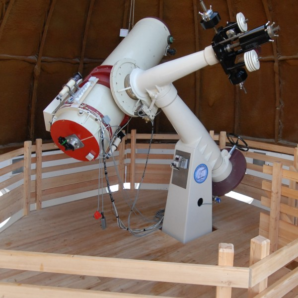
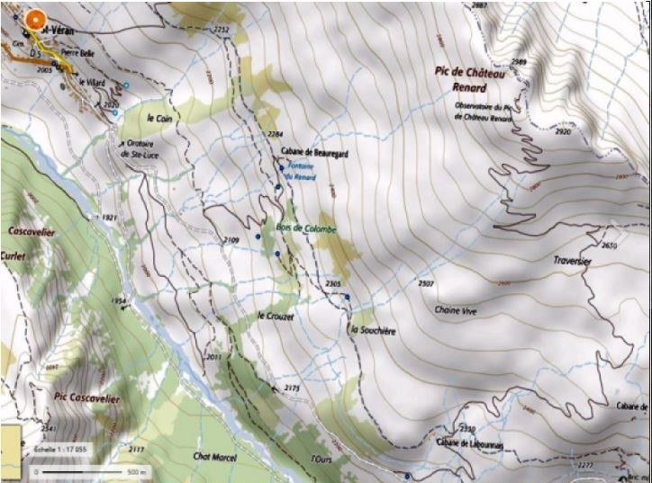
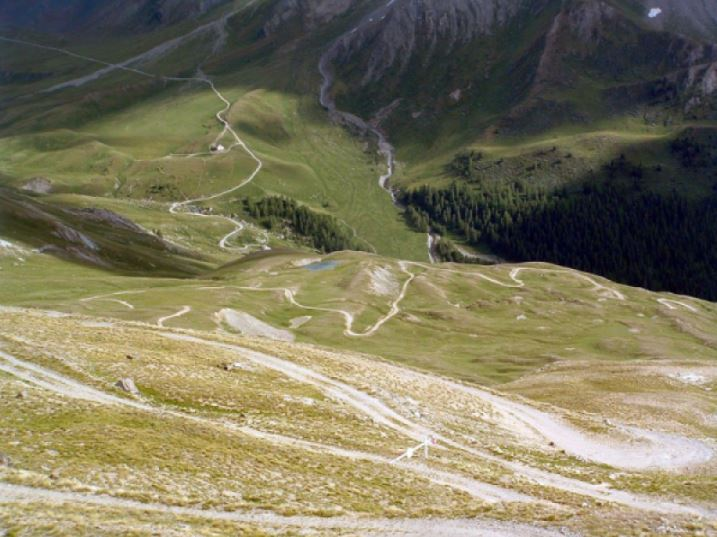
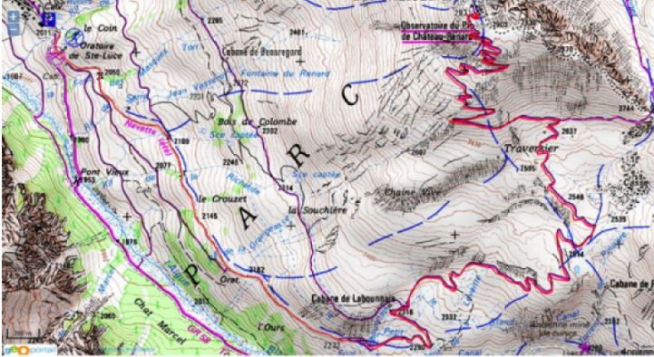
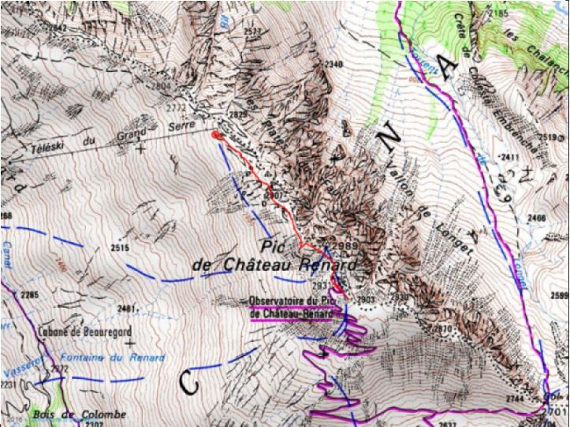

El Observatorio Saint-Véran - Paul Felenbok está situado en el corazón del Parque Natural Regional de Queyras, por lo que está sujeta a la normativa de los Parques Naturales Regionales. Está prohibido recoger flores, recolectar minerales, caminar fuera de los caminos,etc.
El acceso es exclusivamente a pie. Se pueden tomar varias rutas desde Saint-Véran o desde el Pont de Lariane (municipio de Molines-en-Queyras). En la Oficina de Turismo de Queyras pueden darle más información, las rutas se muestran en el mapa de senderismo Top 25 3637 OT de l'IGN.
IMPORTANTE: El tráfico en el pueblo y en la carretera de Clausis está regulado por decreto municipal. En julio y agosto está prohibida, salvo para los residentes. Deberá estacionar su vehículo en la entrada del pueblo según las instrucciones que se le den a la entrada de la municipalidad.
Desde la barrera de Sainte-Luce (salida Este de Saint-Véran), toma la carretera de la Chapelle de Clausis. Tras unos 3 km, es decir, una hora de camino, el sendero del Observatorio se encuentra a la izquierda. Son unas 2 h 30 de caminata. En julio y agosto, es posible reducir la duración del viaje si toma el autobús y pide al conductor que pare en el cruce del Observatorio. El cruce del Observatorio, lo deja a 2 horas y 30 minutos de ascenso.
Similar al itinerario 1 pero siguiendo el torrente de la Aigue-Blanche para la primera parte. Puede llegar a la Aigue-Blanche por el camino de la derecha en la barrera de Sainte-Luce. Después de unos 3 km, diríjase hacia la capilla Sainte-Élisabeth. Allí, estará a unas 2 h 30 de caminata.
Salga de Saint-Véran hacia las aerosillas (en dirección a la "Casa del Sol") y pase por encima del hotel Alta-Peyra. Sigue la ruta señalizada "Gran Canal". Después de unos 3 km, a la altura de una cabaña de pastores, el Gran Canal cruza el sendero del Observatorio. Siga la pista, te quedarán unas 2 h de caminata.
Salga de Saint-Véran hacia la Casa del Sol. Toma el camino hacia la capilla. Luego, toma el camino paralelo a la aerosilla "Cassettes" hasta la llegada de este ascensor. A continuación, siga las crestas hasta el Observatorio. Este itinerario marcado es aproximadamente dos veces más corto que los anteriores, el desnivel es más rápido. Se recomienda una cierta experiencia en el senderismo de montaña.
Necesita un coche. Diríjete al estacionamiento del puente de Lariane (carretera de Col Agnel). Toma la dirección del Coronel Longet. Desde el Col Longet, ve al sendero del Observatorio. Son aproximadamente 3 horas de caminata para este itinerario.
El acceso al Observatorio es más fácil cuando hay suficiente capa de nieve. Muchos esquiadores utilizan las rutas de acceso al Observatorio, especialmente los que utilizan las aerosillas de la estación de esquí de Molines-Saint-Véran. La pista suele ser claramente visible entre el la cima de la aerosilla de Grand Serre y el Observatorio. El uso de raquetas de nieve es una buena alternativa a los esquís, pero es más deportiva.
Para obtener más información y recomendaciones específicas sobre el acceso en invierno, consulte el página invierno.